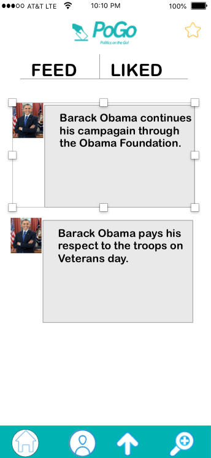
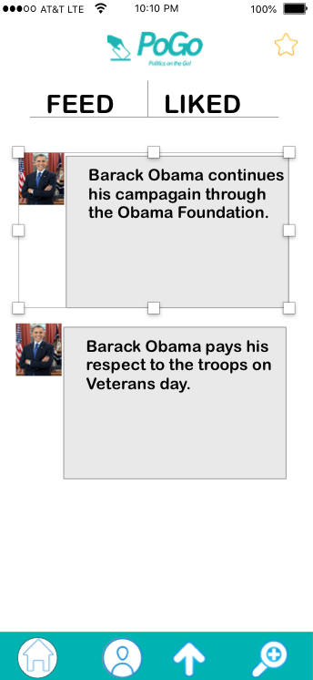

POGO
 

"PoGo, Politics on the Go!" is the Tinder for politics. PoGo is an app that connects Millennial and Gen Z voters to local candidates. It takes politics on the go, the app speeds up candidate research, the user has access to clear and fact-checked candidate profiles allowing the user to make a more informed voting decision and increases voter engagement. PoGo is a personalized voter guide created to make politics more approachable and interactive. Through research our team has found that Millennials value transparency, speed, and experience; that's exactly what PoGo brings to politics.
Contribution:
* Designed an interactive wireframe using Sketch and Adobe XD
* Designed and implemented all art assests
* Carried out user research to determine the needs of customers through social media and email
* Programmed and developed the User interface
* Began the development of the backend server
* Assisted with the development of the Business Model Canvas
* Attended weekly project meetings